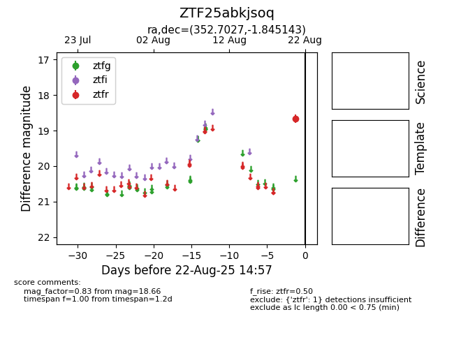

Target ZTF25abkjsoq at 2025-08-22 15:51, see:
FINK: fink-portal.org/ZTF25abkjsoq
Lasair: lasair-ztf.lsst.ac.uk/objects/ZTF25abkjsoq
ALeRCE: alerce.online/object/ZTF25abkjsoq
alt names
ZTF25abkjsoq (ztf,alerce)
coordinates:
equatorial (ra, dec) = (352.7027,-1.84514)
galactic (l, b) = (82.1443,-58.18208)
photometry
last ztfr=18.66
1 ztfr detections
